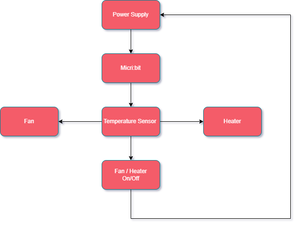

| Artefact | Design Requirements | Programs language /Technical components |
|---|---|---|
| Website |
Create minimum of 7 pages:
Home Product Product Detail Login Register Statistics MicoBit Controller |
Programming features HTML Firebase databases Python Customized JavaScript Customized CSS bootstrap bundle min js bootstrap bundle CSS |
Description:The objective of the website is to create an online presence for promoting and controlling the embedded system.Top Navigation Section:To create a top navigation to display the above pages.Home Page:The main webpage of the website, to include company information.Products page:Information about specific products will be displayed (up to 6 products will be displayed)Products Detail Page (PDP):Include two “View Demo” buttons. Once clicked a video will be uploaded within the frame.Login page:Create Sign Up button and Sign In form with password reset option.Registration page:Will contain all relevant fields required for registration. Every field will have its own validating rule.- All fields must be completed. - First, last and User name must be alphabet only. - Email must contain @ symbol.. - Password length minimum: > 6 and < 12. - Once completed should be redirected to the index.html page. - For any violation there must be a popup error message. - Form not to be submitted unless the checkbox is ticked. - As soon as the form is submitted, redirect it to the homepage. Statistics page:Each graph has daily, weekly, and monthly buttons to show the corresponding statistics. To display the graphs within the webpage, create a CSV file. That CSV file will be then converted to HTML format using Python Script. However, to display the temperature live data, the ThingSpeak platform will be used. In order to show the live data, the ThingSpeak platform will be used instead of the CSV file.MicroBit Controller page:On/Off buttons will be included on this page to control the lights or any output device. The live temperature sensor will be displayed using the ThingSpeak platform, a platform for IoT analytics. The value of the Firebase database will be changed when the On/Off button is clicked. |
||
Highlevel Website Design Requirements |
||
| Artefact | Design | Programs language /Technical components / Material |
|---|---|---|
| Heating, ventilation and air condition (HVAC) Automatic temperature control |
|
|
Description:HVAC equipment is controlled via temperature sensor to maintain the desired temperature by a cooling/heating system. This module is based on the working principle of a temperature sensor. It reads temperature changes in its surroundings and sends the data to the analogue IO in the board. The Heating mode will be activated if the temperature is lower than 18 Degrees Celsius. If the temperature stays between 18 and 29 Degrees Celsius, the system will remain off. If the temperature stays above 30, the cooling fan will remain on. |
||
System Architecture Diagram |
Data flow diagram |
| Artefact | Design | Programs language /Technical components |
|---|---|---|
| Auto Light | Micro:bit Controller |
|
Description:The objective is to create an On/Off button to be controlled by the website, a light will be used to demonstrate this. Prepare the Micro:bit hardware. Code the Micro:bit with python. Download the code in Micro:bit using the USB. Assemble the Micro:bit device with light. Connect the Micro:bit with USB within COM3 port. Use the Turn On/Off button on the “Micro:bit Controller” web page to controll the LED Lights remotely |
||
System Architecture Diagram |
Data flow diagram |